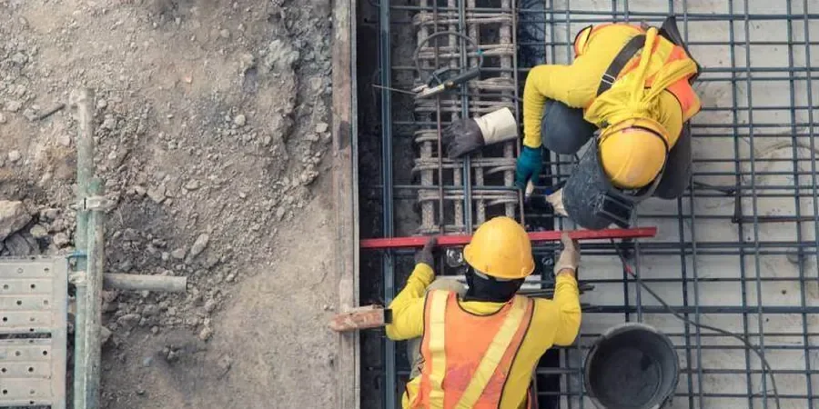

Our firm provides comprehensive geotechnical services in Drummondville, combining rigorous site characterization, foundation design, subsurface investigation, and construction monitoring tailored to the region's unique conditions. With a focus on local relevance, we deliver reliable, code-compliant solutions for residential, commercial, and infrastructure projects. Our approach integrates advanced testing methods such as Menard pressuremeter and flat dilatometer to precisely assess soil behavior. Whether for new developments or retrofits, we ensure that every project benefits from consolidated regional experience and calibrated equipment, supporting safe and efficient construction across Drummondville.
